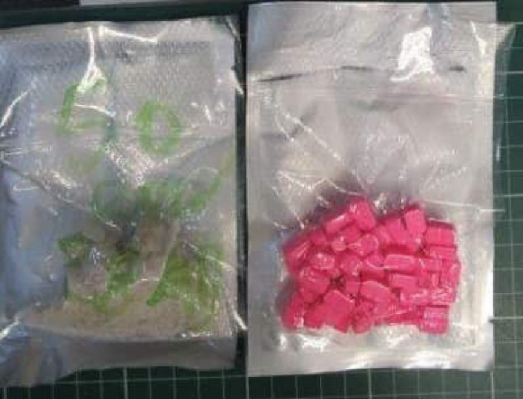
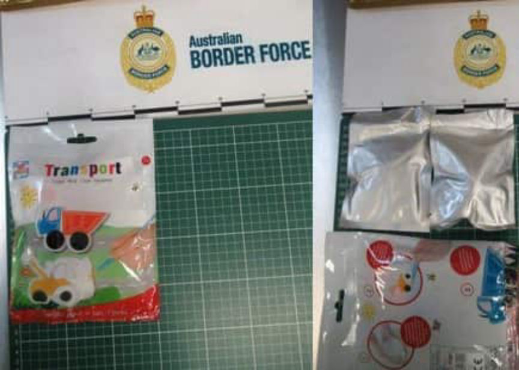
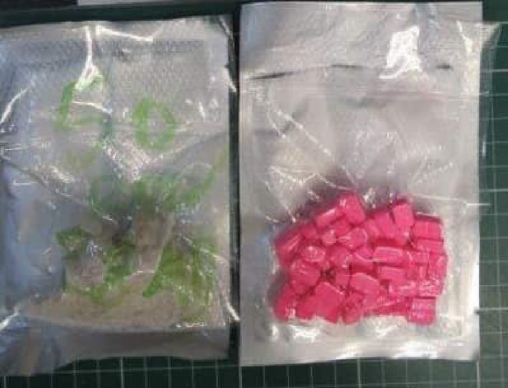
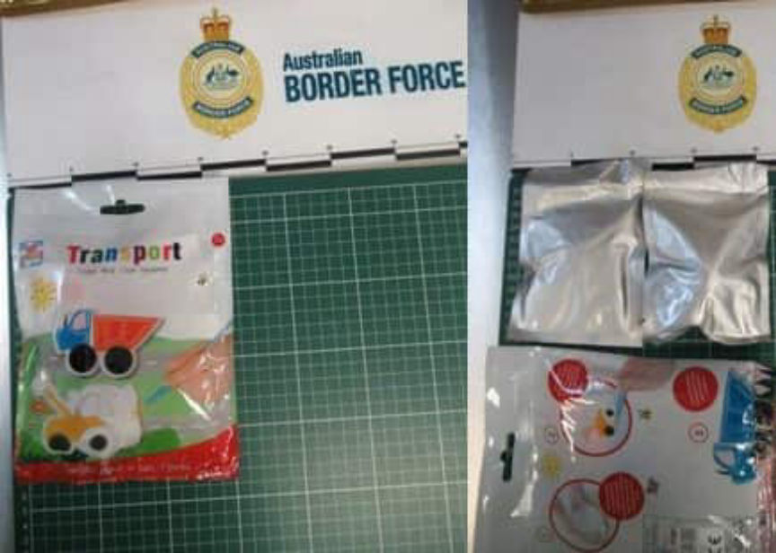

Australian Feds Seize $1.5 Million in Crypto
~3 min read | Published on 2019-12-05, tagged General-News, Seized using 509 words.
Australian law enforcement arrested two suspected drug traffickers and seized more than $1.5 million in cryptocurrency after the Australian Border Force intercepted two packages containing a combined total of 55 grams of MDMA. The cryptocurrency seizure was one of the largest of its kind in Western Australia.
The Australian Border Force announced in a recent press release that detectives with Western Australia Police Force’s Drug & Firearm Squad – Meth Transport Team had arrested two people in connection with information provided by the Border Force. In October, ABF Officers at the Perth Gateway Facility intercepted two packages containing MDMA. One contained 27.5 grams of MDMA tablets and the other contained 27.5 grams of MDMA powder. The packages had been shipped by someone in the United Kingdom to an address in Perth.
Australian Border Force Regional Commander for WA Rod O’Donnell said “every single gram of drugs we seize means one less hit that could potentially ruin someone’s life and the lives of those around them. Our officers are awake to the many creative methods criminals try to import these dangerous drugs, and they will continue to do everything they can to stop them at the border.” The MDMA was disguised in a children’s painting kit, according the press release.
Information about the package and the intended recipients was passed along to the WA Police Force’s Meth Transport Team. The Meth Transport Team then launched their own investigation into the suspected drug traffickers. During the course of their investigation, investigators with the Meth Transport Team executed a search warrant at a house in Charing Crescent, Marangaroo. Investigators found “items consistent with those used to sell or supply Cannabis” during the search of the house. The consistent items included 700 grams of marijuana. Investigators also found prescription bottles of dextroamphetamine, according to The West Australian.
Officers arrested a 27-year-old man and a 25-year-old woman for Attempted Possession of Drugs with Intent to Sell or Supply (MDMA) and Possession of Prohibited Drugs with Intent to Sell or Supply (Cannabis).
Officers from Technology Crime Services examined an electronic device seized during the raid and found $1,524,102 worth of cryptocurrency stored on the device. The cryptocurrency was hidden behind so-called “seven digit codes.”
Detective Senior Sergeant Paul Matthews, Officer in Charge of the Drug & Firearm Squad:
While WA Police Force has seized millions of dollars’ worth of physical property and bank account assets in the course of several drug investigations, particularly those involving established criminal networks, the identification and freezing of over $1.5 million of cryptocurrency in these circumstances highlights the current digital environment in which law enforcement agencies must operate.
Using the latest technologies and digital forensic techniques we thoroughly investigate all possible methods of holding financial assets, and will target all forms of wealth that may be derived from the illicit drug trade.
The ongoing partnerships between state and Commonwealth law enforcement agencies continue to provide WA Police Force with new intelligence and new lines of investigation to act on.
Both suspects are in custody without bail.
The Australian Border Force announced in a recent press release that detectives with Western Australia Police Force’s Drug & Firearm Squad – Meth Transport Team had arrested two people in connection with information provided by the Border Force. In October, ABF Officers at the Perth Gateway Facility intercepted two packages containing MDMA. One contained 27.5 grams of MDMA tablets and the other contained 27.5 grams of MDMA powder. The packages had been shipped by someone in the United Kingdom to an address in Perth.
A Picture of the Seized MDMA | ABF
Australian Border Force Regional Commander for WA Rod O’Donnell said “every single gram of drugs we seize means one less hit that could potentially ruin someone’s life and the lives of those around them. Our officers are awake to the many creative methods criminals try to import these dangerous drugs, and they will continue to do everything they can to stop them at the border.” The MDMA was disguised in a children’s painting kit, according the press release.
Information about the package and the intended recipients was passed along to the WA Police Force’s Meth Transport Team. The Meth Transport Team then launched their own investigation into the suspected drug traffickers. During the course of their investigation, investigators with the Meth Transport Team executed a search warrant at a house in Charing Crescent, Marangaroo. Investigators found “items consistent with those used to sell or supply Cannabis” during the search of the house. The consistent items included 700 grams of marijuana. Investigators also found prescription bottles of dextroamphetamine, according to The West Australian.
Another Picture of the Seized MDMA | ABF
Officers arrested a 27-year-old man and a 25-year-old woman for Attempted Possession of Drugs with Intent to Sell or Supply (MDMA) and Possession of Prohibited Drugs with Intent to Sell or Supply (Cannabis).
Officers from Technology Crime Services examined an electronic device seized during the raid and found $1,524,102 worth of cryptocurrency stored on the device. The cryptocurrency was hidden behind so-called “seven digit codes.”
Detective Senior Sergeant Paul Matthews, Officer in Charge of the Drug & Firearm Squad:
While WA Police Force has seized millions of dollars’ worth of physical property and bank account assets in the course of several drug investigations, particularly those involving established criminal networks, the identification and freezing of over $1.5 million of cryptocurrency in these circumstances highlights the current digital environment in which law enforcement agencies must operate.
Using the latest technologies and digital forensic techniques we thoroughly investigate all possible methods of holding financial assets, and will target all forms of wealth that may be derived from the illicit drug trade.
The ongoing partnerships between state and Commonwealth law enforcement agencies continue to provide WA Police Force with new intelligence and new lines of investigation to act on.
Both suspects are in custody without bail.